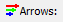

Incompressible Flow Through a Pipe into a Box
Simulate a steady-state turbulent flow through a pipe into a box. View velocity vectors and particle tracks within the flow volume.

Checkout a screencast of this tutorial at "Screencast of Flow Through a Pipe into a Box."
Goals
In this tutorial, you will learn how to:
- Specify fluid conditions on a single volume for an incompressible, steady-state, turbulent flow simulation
- Change the turbulence model
- Specify boundary conditions on faces
- Examine and refine the mesh
- Specify meshing parameters
- Monitor residuals to determine flow simulation convergence
- Generate velocity vectors
- Generate particles tracks
- Use symmetry to view the entire simulation
Assumptions
- You have activated the Caedium RANS Flow add-on, or Caedium Professional.
- You are familiar with Caedium essentials.
- You have either:
- Created the geometry for this tutorial by following the tutorial "Pipe into a Box"
- Imported the geometry (pipe-into-box.brep) into Caedium — select the File Toolbar and click the Import button

The geometry within Caedium should appear as shown below.
Prepare the Volume
Right-click an edge of the volume, double-click the first volume in the Select dialog and then select Properties from the menu. In the Properties Panel, select the Volume tab  and set the Name to flow-volume.
and set the Name to flow-volume.
To shade the geometry faces, right-click on the View Window (view) background, double-click sim->Faces, and then select Properties from the menu. In the Properties Panel, turn off the Transparent property to make all faces visible (shaded).
Shading the faces in the simulation will make it easier to select them when you configure fluid and boundary conditions.
Specify the Substance Settings
Specify the Fluid Conditions
Select the Physics Tool Palette. Select Gases->Air. The Properties Panel will show the default properties for air. To enable incompressible turbulent (viscous) flow the State->Rotational and State->Viscous properties should be set to Yes (their default values), and the State->Compressible, State->Heat Transfer, State->Species, and State->Transient properties should to be set to No (their default values).

Drag and drop the Air tool onto a face of the volume. Select Done to set air as the fluid inside the volume.
Set the Turbulence Model for the Simulation
For turbulent flow, a turbulence model is an essential part of a Reynolds-Averaged Navier-Stokes (RANS) solver. In this tutorial, you will use the k-epsilon turbulence model rather than the default SST k-omega turbulence model.
With the volume already selected from the previous step, the Properties Panel will show the Substance: Air properties by default. Expand the Substance: Air->Solver: RANS Flow property and set the Turbulence Model to be k-epsilon.
Set the Reference Velocity for the Simulation
The reference velocity can be used to initialize the simulation and to specify the inlet velocity. In this tutorial you will set a reference velocity of -10 m/s in the Z-direction.
In the Properties Panel set Substance: Air->Properties->Phase: Single->Reference->U: Fixed Value->Value to be [0 0 -10] and press Enter on the keyboard.
Specify the Boundary Conditions
Drag and drop the Faces->Wall tool onto a face of the volume. Double-click flow-volume->Faces in the Select dialog and select Done to create walls on the outer surfaces of the volume.
A wall is a solid surface through which fluid cannot flow.
To create the two symmetry conditions, drag and drop the Faces->Symmetry Local tool onto one of the symmetry faces shown below (you will need to rotate your view to see these 2 faces). Double-click the first face in the Select dialog. Then select Select/Deselect and right-click on the second face (shown below), double-click the first face in the Select dialog and select Done.
The Symmetry Local tool can be applied to any planar face. The Symmetry tool applies to the entire simulation and is useful for visualization as will be demonstrated later.
To create an inlet, drag and drop the Faces->Inlet tool onto the face shown below in blue. Select that face in the Select dialog, click OK, and then select Done to create the inlet.
An inlet is a boundary condition that specifies the properties of the fluid as it enters the flow volume.
To create an outlet, drag and drop the Faces->Outlet tool onto the face shown above in green. Select that face in the Select dialog, click OK, and then select Done to create the outlet.
An outlet is a boundary condition that specifies the properties of the fluid as it leaves the flow volume.
Display Initial Velocity Color Map on a Symmetry Plane
Select the Results Tool Palette. Drag and drop the Vector Fields->U (velocity) tool onto the symmetry face aligned with the YZ plane in the View Window. Double-click the first face in the Select dialog and select Color Map to create contours of velocity magnitude.
The request for the velocity color map will cause the entire volume to be meshed. Only a single color (blue) is shown, because all the initial velocity magnitude values at each element on the face are the same.
To better see the mesh resolution, left-click on the View Window, and then set Style to Flat in the Properties Panel. Turn on the Transparent property to see the face mesh elements (triangles).
Specify Meshing Parameters
The size and distribution of triangles on the symmetry face reflect a coarse mesh. Although you could quickly get a converged solution using such a mesh, the accuracy of the solution would be poor. The following steps will use the Accuracy tool to improve the mesh resolution.
Select the Physics Tool Palette. Select the Special->Accuracy tool. In the Properties Panel set Accuracy to Custom, enter 80 for the Resolution, and press Enter on the keyboard.
Drag and drop the Accuracy tool onto the longest edge (shown below in red). Double-click the first edge in the Select dialog and select Done.
The volume will be re-meshed with the new accuracy settings, resulting in the improved mesh resolution shown below.
Display Velocity Vectors
To display velocity vectors as the simulation updates, select the Results Tool Palette. Drag and drop the Vector Fields->U tool onto the symmetry face showing the mesh. Double-click the first face in the Select dialog and select Arrows to create arrows colored by velocity magnitude.
In the View Legend, left-click on the title Arrows , then in the Properties Panel set Scale to 0.1.
View Particles Tracks Through the Volume
To better see the particles tracks (or streamlines), right-click on the View Window (view) background, double-click sim->Faces, and then select Properties from the menu. In the Properties Panel, turn on the Transparent property.
To create a face to be the seed source for the particles tracks, right-click on an edge of the outlet face in the View Window. Select the outlet face in the Select dialog (the outlet face will be hightlighted in the View Window), click OK, and then select Copy. In the Home Toolbar click Paste  to paste the seed source. The seed source will be pasted on top of the outlet.
to paste the seed source. The seed source will be pasted on top of the outlet.
To select the seed source face, right click on the background of the View Window, expand sim->Faces, and select the last face in the list. Click OK and then select Properties.
To translate the seed source, select the Geometry Tool Palette, and then select the Transforms->Translate tool. In the Properties Panel set Translate to [0 0 3.5] and press Enter on the keyboard. Click Add Translate at the bottom of the Properties Panel and select Done to translate the seed source.
To display particles tracks, select the Results Tool Palette. With the seed source face still selected from the previous step, double-click the Vector Fields->U tool and select Set Particles Target. Right-click on an edge of the volume and double-click flow-volume.
In the Properties Panel set Particles->Type to be Ribbon. Expand the Type: Ribbon property and set Width to 0.025.

To color the particles tracks by velocity magnitude, double-click the Vector Fields->U tool and select Color Map.
Create Residuals Monitor
Residuals provide a normalized measure of the error in solving for the primary variables (e.g., pressure, velocity) in a simulation. Ideally the per iteration residuals should become progressively smaller. A steady-state simulation is considered converged when the primary variables no longer show any significant variation with successive iterations and convergence is usually indicated by no further reduction in the residuals with more iterations.
Drag and drop the Special->Residuals tool onto an edge of the flow volume. Double-click flow-volume in the Select dialog and select Monitor to create the residuals monitor.
Drag and drop the Residuals tab over to the right-hand edge of the Caedium application window to split the window into two parts as shown below.
Run the Flow Solver
The number of flow (simulation) solver iterations is determined by multiplying the number of simulation time-steps (default = 5) by the number of iterations per simulation time-step (default = 100). The number of simulation time-steps is determined by dividing the simulation duration (default = 5 s) by the simulation time-step (default = 1 s). After each simulation time-step (equivalent to 100 iterations by default) the results will be refreshed. For this simulation the defaults are fine and will result in a total of 500 iterations.
In the Home Toolbar click the Run button  to run the flow solver.
to run the flow solver.
If you wanted to interrupt the flow solver, you would re-click the Run button; the solver would then stop at the end of the current simulation time-step.
Let the solver complete its run. Note the updates of the velocity vectors and the Residuals Monitor as the simulation converges.
Use Symmetry to View the Entire Simulation
The Symmetry tool allows you to view a symmetrical simulation in its entirety.
To maximize the 3D view, drag and drop the Residuals Monitor tab onto the same tab row as the main View Window (view). Select the View Window.
Select the Physics Tool Palette. Select the Simulation->Symmetry tool. In the Properties Panel set Planes to X+Y. Drag and drop the Symmetry tool onto the background of the View Window and select Done.
In the Properties Panel select the View tab  and turn on the Symmetry property to see the 3 additional symmetric views of the simulation.
and turn on the Symmetry property to see the 3 additional symmetric views of the simulation.
Try For Yourself
The sym project file for this tutorial can be viewed in Caedium or you can investigate this case yourself using our RANS Flow add-on.
The most convenient way to view and edit this case is to use our Professional add-on.
Feedback
Questions? Ideas? Problems?

Comments
Hello,I can't understand why
Hello,I can't understand why you need to duplicate the outlet surface and paste it at 3.5...
and when did we set the duplicated face as the seed for the particles?
Positioned for aesthetics
Releasing the particles at the location of the duplicate face is purely for aesthetics - it's a good place to see the entire recirculation. For more on particles see "Particles or Streamlines."